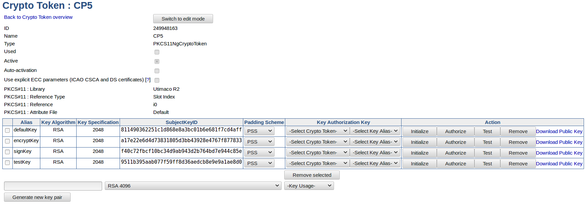
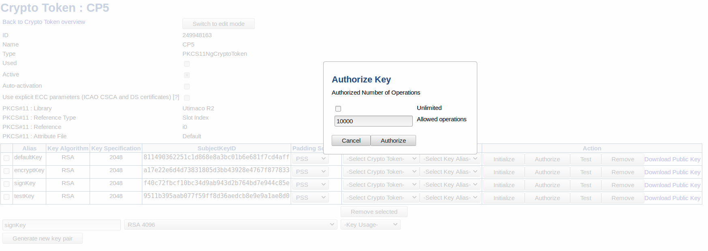

CP5 Crypto Token
EIDAS This is an EJBCA eIDAS feature.
The eIDAS-compliant Utimaco CryptoServer CP5 HSM is with its key authorization functionalities suited for eIDAS-compliant qualified signature creation and remote signing. Other application areas include the issuing of (qualified) certificates, OCSP and time stamping.
The CryptoServer CP5 uses a so-called Key Authorization Key (KAK) and has a set of features which requires additional key operations to be performed from EJBCA before usage.
The following sections provide information on the Key Authorization Key (KAK) and how to set up the CP5 Crypto Token.
Key Authorization Key
One of the main differences with the CryptoServer CP5 HSM is the usage of a so-called Key Authorization Key (KAK). HSM keys must be associated with and authorized by a KAK before it can be used. The HSM allows using the same KAK for multiple keys, however, eIDAS keys should have an individual KAK for each HSM key. In EJBCA, the Key Authorization Keys are created and live in a Crypto Token, like any other key. This enables the possibility to store the keys either encrypted in the database as a "soft" token or using a PKCS#11 device.
The KAK will be required to re-authorize the HSM key after an HSM restart or after the maximum number of operations is exceeded (if not unlimited). Additionally, the HSM allows changing the KAK for a given key. Hence, it's strongly recommended to name the Key Authorization Keys in a way that indicates which HSM key they belong to. Due to HSM limitations, the authorization state cannot be retrieved via PKCS#11. However, it can be read using the Utimaco CXI tool.
The KAK must be a >= 2048 bit RSA Key.
Create Crypto Token
To create a CP5 Crypto Token, do the following:
In the EJBCA UI, click Crypto Tokens under CA Functions.
On the Manage Crypto Tokens page, click Create new.
On the New Crypto Token page, select Type=PKCS#11 CP5.
Click Save.

Key Management Fields
In addition to the standard fields, the following fields for key management are available for CP5 Crypto Token.
|
Field |
Description |
|
Padding Scheme |
Padding scheme used for signing the hash sent back from HSM during key initialization and authorization (valid values are PSS and PKCS#1). Note that some Java PKCS#11 providers do not support RSASSA-PSS out of the box, in which case PKCS#1 may be preferable. For more information, see Hardware Security Modules (HSM). |
|
Key Authorization Key (KAK) |
Key used for initialization and authorization of CP5 HSM keys. The KAK should already be created in another (Soft or PKCS#11) Crypto Token and referred to from this field. |
|
Key Usage |
Keys generated in the CP5 HSM are required to have a defined usage. Either encrypt / decrypt or sign / verify. |
Initialize and Authorize
Before a CP5 key can be used it must be initialized, thus associated with a Key Authorization Key (KAK) as well as authorized for usage by that key. Once a padding scheme and KAK has been selected (see above), clicking Initialize will associate the KAK with the targeted HSM key. To authorize the usage of the HSM key, click Authorize and specify the maximum number of allowed operations.

Enabling Unlimited will allow an infinite number of operations performed by the HSM key.
Important
The maximum number of allowed operations isn't necessarily equivalent to the number of actions performed in EJBCA. Some operations in EJBCA carry out multiple operations using the key. For example, testing a key will perform multiple signings which effectively would reduce the remaining number of operations by more than 1.
Managing Keys from the CLI
Additional functions for CP5 key management can be performed using the tool P11NG-CLI.